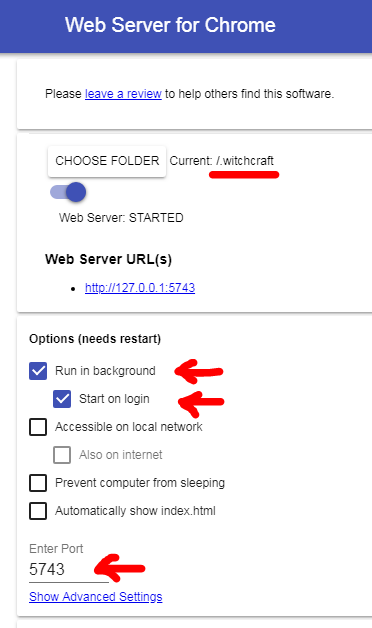

How to install and use
Step 1: Install Chrome extension
Get it here.
Step 2: Install Web Server Chrome app
Get it here.
Step 3: Configure Web Server Chrome app
Witchcraft will try to load files from http://127.0.0.1:5743 (irrelevant note: 0x53 and 0x43 are ASCii codes for W and C). For instance, to load google.com.js, the request URL will be http://127.0.0.1:5743/google.com.js.
That's what the Web Server Chrome app is for (see step 2). This app will let you serve files from a given folder at some designated port. Choose port 5743 and select the folder where your scripts will be located (suggested folder: ~/.witchcraft). Mark it to automatically start so you don't have to worry about it ever again:
And that's it. Now write your scripts inside the folder configured above and have fun!
Advanced notes
Installation notes
In step 1, you can install Witchcraft as a development extension instead (look for the extension under the folder `/chrome-extension` and manually load it as an unpacked extension).
In step 3, you are free to use whatever server you prefer. All it has to do is to be able to serve files directly from the folder where you chose to store your scripts. For other options, check this gist with a thorough list of ways to serve a local folder.
Technical notes
Witchcraft listens for every frame being loaded in Chrome, parsing its location's host name. Then, for every domain level combination, it looks for JavaScript and CSS files by requesting them to the local server.
Chrome extensions have a very strict policy regarding access to the file system. That's why Witchcraft needs a local web server. Unfortunately, the only way to not depend on a local server would be to also have a Chrome app (apps are allowed to do some things that extensions can't). The problem is that new Chrome apps are not being accepted by the store any more, because Google is discontinuing support for them on all platforms except ChromeOS. I tried even serving scripts from inside the extension folder, but Chrome complains that the extension installation is corrupt and disables the extension. So it looks like we're stuck with either installing a third-party app that does that or running our own local server.